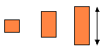
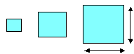
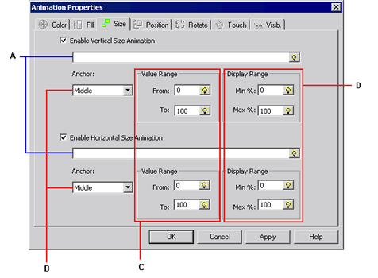
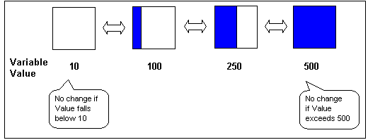

|
|
|
|
|
|
|
|
On the panel, draw an object you want to change the size for at runtime. The object's original size represents 100%. For more information on how to draw objects, see Chapter 7, Drawing Graphics.
Open the Animation Properties dialog box using one of the following methods.
|
Method |
Details |
|
Double-click |
Double-click an object on the panel.
|
|
Right-click |
Select the object on the panel, and right-click. Select Animation from the menu. |
|
Icon |
Select the object on the panel, and click the Animation icon from the Edit toolbar.
|
|
Menu |
Select the object on the panel, and then select Animation from the Edit menu. |
In the Animation Properties dialog box, click the Size tab.
Select either Vertical Size Animation or Horizontal Size Animation.
To resize vertically:

Select Enable Vertical Size Animation.
To resize horizontally:

Select Enable Horizontal Size Animation.
To resize both vertically and horizontally:

Select both Enable Vertical Size Animation and Enable Horizontal Size Animation.
To disable any of the settings, clear the appropriate checkbox.
Set up Size Animation.

Select the variable that is associated with the size of the animated object. It corresponds to the range of values defined in [C]. For more information on how to set up variables, see Chapter 6, Creating Variables.
Select the anchor point that determines where the object is resized from. If you select vertical resizing, choose either Top, Middle or Bottom. If you select horizontal resizing, choose either Left, Middle or Right.
Objects are resized as shown below.
|
Vertical Size Animation |
Horizontal Size Animation |
|
Anchor set to Top
|
Anchor set to Left
|
|
Anchor set to Middle
|
Anchor set to Middle
|
|
Anchor set to Bottom
|
Anchor set to Right
|
Enter the From and To values for the variable in the Value Range fields. Values must be integers between -2147483648 and 2147483647. The maximum value displayed at runtime is the 'To' value, even if the actual value is higher. Likewise, the minimum value displayed at runtime is the 'From' value, even if the actual value is lower.
Example: The From value is set to 10 and the To value is set to 500:

The Display Range determines the size of the object. It defines the minimum and maximum percentage of the original object that will be displayed. In the Min (%) and Max (%) fields, enter the percentages (0 to 1000) that define how the object is resized.
For example, to resize the rectangle below from 0% to 50% of its original size, Min% is set to 0 and Max% is set to 50 in the Display Range.

Click OK to apply the settings and close the Animation Properties dialog box.

If you type a variable name that does not exist in the project, the New Variable dialog box displays.
If you click Apply or if you click another animation tab, the settings are applied but the dialog box does not close.